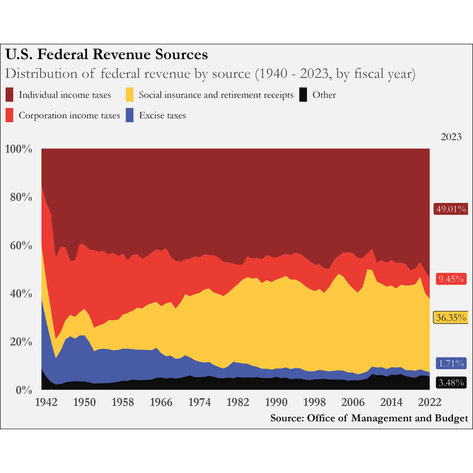

Please refer to Part 1 for context on how to reproduce the static version of an area chart that shows the distribution of U.S. Federal Revenue Sources over time. This post will explain how to animate the data so that the colors appear to fill in the plot as the years increase.

The R package the enables us to create animations and store them in .gif files is the camcorder package.
How we are going to achieve the animation is that we will essentially publish roughly 80 plot images (one for each year between 1941 and 2023) and then stitch them together (in order) to form a gif. The package assists us in stitching images together.
Simple Code Reproduction
The following is all of the code from Part 1 up until the portion that actually creates the plot with a slight alteration at the end: we mutate an additional column that shows each group’s proportion for every year.
To produce plot images for each year between 1941 and 2023, let’s create a function that takes a data frame and a year and produces a plot image. We can create the function animate_plot() to accomplish this.
Let’s take a look at an example year with this function…
Code
animate_plot(fin, 1973)
We see all the data up until 1974, with x-axis showing the remaining years. And in this image, we have the 1974 numbers called out. This is because when we entered the year 1973 in our function, R only plots data up to and including the year 1973, and the function then determines what the 1974 numbers are and annotates them in the field just beyond the right edge of the area geometry.
Generating plot images for each year and stitching them together in order will produce a moving image that shows the area geometry moving to the right for each year. How can we loop through our written function animate_plot() to produce a plot for each year? We’ll use the map() function from the purrr and utilize its functional programming toolkit.
Code
map(1973:1974, ~animate_plot(fin, .))
[[1]]
[[2]]
Essentially (in our case), we want to loop the function animate_plot() over a vector of years in sequential order. I showed how to use map() in the code chunk above just for 1973 and 1974 (1973:1974 produces a vector of every number between 1973 and 1974). Therefore, to produce every plot for our time frame we can write map(1942:2022, ~ animate_plot(fin, .)). I’m not going to run this code on this page and have 81 plot images outputted here.
Annimation
To utilize the capabilities of the camcorder package, we would run the following code:
Code
# gg_record(# dir = paste0(getwd(), "/animate_over_years"), # where to save the recording# device = "png", # device to use to save images# width = 7.3, # width of saved image# height = 5.95, # height of saved image# units = "in", # units for width and height# dpi = 300 # dpi to use when saving image# )# # map(1942:2022, ~ animate_plot(fin, .))# # gg_playback(# name = paste0(getwd(), "/animate_over_years", "/animate_over_years.gif"),# first_image_duration = 5,# last_image_duration = 15,# frame_duration = .15,# image_resize = 800,# background = "white"# )
The first function, gg_record() initiates a session in which R knows to immediately save as an image every plot that is generated. Once the recording session begins, we can loop over our plot generating function to produce each of the plots we need an in the order we need them. Once each plot is generated and saved to disk, the function gg_playback() takes each image produced and generates a .gif file. You can adjust how long the gif stays on the first and last image as well as how long to stay on each image in between.
Please refer to the package repo for more information about the package.
Source Code
---title: "Sources of U.S. Federal Revenue Over The Years Part 2"toc: truedate: "2025-08-11"description: "A practice in plot animation"categories: [fiscal policy]image: "images/animate_over_years.gif"format: html: code-fold: true code-tools: trueexecute: warning: false message: false---# IntroductionPlease refer to [Part 1](https://solplots.com/demos/ombReceipts.html) for context on how to reproduce the static version of an area chart that shows the distribution of U.S. Federal Revenue Sources over time. This post will explain how to animate the data so that the colors appear to fill in the plot as the years increase.The R package the enables us to create animations and store them in .gif files is the [**camcorder**](https://github.com/thebioengineer/camcorder) package.How we are going to achieve the animation is that we will essentially publish roughly 80 plot images (one for each year between 1941 and 2023) and then stitch them together (in order) to form a gif. The package assists us in stitching images together.# Simple Code ReproductionThe following is all of the code from Part 1 up until the portion that actually creates the plot with a *slight* alteration at the end: we mutate an additional column that shows each group's proportion for every year.```{r}library(tidyverse)library(janitor)library(extrafont)library(camcorder)fonts()file <-read_csv("data/hist02z1_fy2025(Table).csv")pal <-c("#952929", "#eb3c33", "#ffca41", "#485ba6", "#0d0d0d")mat <- file[-c(1, 3, 95:103), -c(5, 6, 9:11)]df <- mat |>row_to_names(1) |>clean_names() |>mutate(across(everything(),~ . |>str_remove(",") |>str_remove(",") |>as.numeric()) ) |>pivot_longer(2:6, names_to ="revenue_type", values_to ="millions" )fin <- df |>filter(fiscal_year >1940) |>mutate(type =case_match( revenue_type, "other_3"~"Other","excise_taxes_2"~"Excise taxes","social_insurance_and_retirement_receipts_2"~"Social insurance and retirement receipts","corporation_income_taxes_1"~"Corporation income taxes", "individual_income_taxes"~"Individual income taxes") ) |>mutate(type =factor( type, levels =c("Individual income taxes","Corporation income taxes","Social insurance and retirement receipts","Excise taxes","Other"))) |>group_by(fiscal_year) |>mutate(pct_label =paste0(round((millions /sum(millions))*100, digits =2), "%")) |>ungroup()```To produce plot images for each year between 1941 and 2023, let's create a function that takes a data frame and a year and produces a plot image. We can create the function `animate_plot()` to accomplish this.```{r}animate_plot <-function(df, filter_year) { filt_df <- df |>filter(fiscal_year <= filter_year) labels <- df |>filter(fiscal_year == filter_year +1) |>pull(pct_label) labels <- labels[c(1:2, 4:5, 3)]# filter_year_label <- expression(underline(bold(paste0(filter_year, ":")))) filt_df |>ggplot(aes(x = fiscal_year, y = millions, fill = type)) +geom_area(position ="fill") +scale_x_continuous(breaks =seq(1942, 2022, 8),expand =c(0, 0),limits =c(1940, 2030) ) +scale_y_continuous(labels = scales::percent,breaks =seq(0, 1, .2),expand =c(.015, 0) ) +scale_fill_manual(values = pal) +labs(title ="U.S. Federal Revenue Sources",subtitle ="Distribution of federal revenue by source (1940 - 2023, by fiscal year)",caption ="Source: Office of Management and Budget") +annotate("label",x = filter_year +4.5,y =c(.75, .46, .11, .03, .3),label = labels,family ="Garamond",size =4,fill =c(pal[1], pal[2], pal[4], pal[5], pal[3]),color =c(rep("grey95", 4), "black")) +annotate("text",x = filter_year +4.5,y =1.05,label = filter_year +1,family ="Garamond",size =4.4) +guides(fill =guide_legend(nrow =2)) +theme_minimal() +theme(legend.position ="top",axis.title =element_blank(),axis.text =element_text(face ="bold",family ="Garamond",size =14),legend.title =element_blank(),legend.text =element_text(family ="Garamond",size =11.2),legend.key.width =unit(.35, "cm"),axis.ticks =element_blank(),panel.grid =element_blank(),plot.title =element_text(face ="bold",family ="Garamond",size =18),plot.title.position ="plot",legend.margin =margin(0, 0, 0, 0), # turned off for alignmentlegend.justification.top ="left",legend.location ="plot",plot.subtitle =element_text( family ="Garamond",size =17,color ="grey30"),plot.background =element_rect(fill ="grey95"),plot.caption =element_text(face ="bold",family ="Garamond",size =12)) }```Let's take a look at an example year with this function...```{r}animate_plot(fin, 1973)```We see all the data up until 1974, with x-axis showing the remaining years. And in this image, we have the 1974 numbers called out. This is because when we entered the year 1973 in our function, R only plots data up to and including the year 1973, and the function then determines what the 1974 numbers are and annotates them in the field just beyond the right edge of the area geometry.Generating plot images for each year and stitching them together in order will produce a moving image that shows the area geometry moving to the right for each year. How can we loop through our written function `animate_plot()` to produce a plot for each year? We'll use the `map()` function from the [**purrr**](https://purrr.tidyverse.org/) and utilize its functional programming toolkit.```{r}map(1973:1974, ~animate_plot(fin, .))```Essentially (in our case), we want to loop the function `animate_plot()` over a vector of years in sequential order. I showed how to use `map()` in the code chunk above just for 1973 and 1974 (`1973:1974` produces a vector of every number between 1973 and 1974). Therefore, to produce every plot for our time frame we can write `map(1942:2022, ~ animate_plot(fin, .))`. I'm not going to run this code on this page and have 81 plot images outputted here.# AnnimationTo utilize the capabilities of the camcorder package, we would run the following code:```{r}# gg_record(# dir = paste0(getwd(), "/animate_over_years"), # where to save the recording# device = "png", # device to use to save images# width = 7.3, # width of saved image# height = 5.95, # height of saved image# units = "in", # units for width and height# dpi = 300 # dpi to use when saving image# )# # map(1942:2022, ~ animate_plot(fin, .))# # gg_playback(# name = paste0(getwd(), "/animate_over_years", "/animate_over_years.gif"),# first_image_duration = 5,# last_image_duration = 15,# frame_duration = .15,# image_resize = 800,# background = "white"# )```The first function, `gg_record()` initiates a session in which R knows to immediately save as an image every plot that is generated. Once the recording session begins, we can loop over our plot generating function to produce each of the plots we need an in the order we need them. Once each plot is generated and saved to disk, the function `gg_playback()` takes each image produced and generates a .gif file. You can adjust how long the gif stays on the first and last image as well as how long to stay on each image in between.Please refer to the package [repo](https://github.com/thebioengineer/camcorder) for more information about the package.